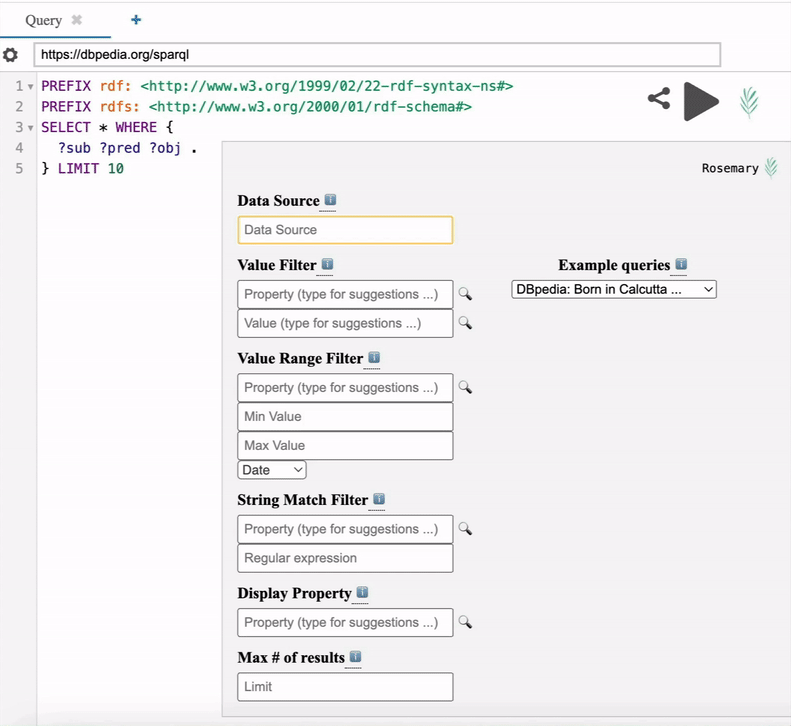
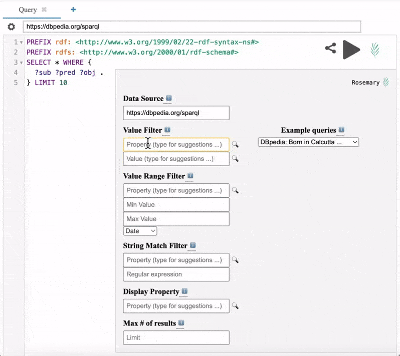
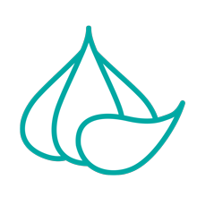

rosemary facilitates pROduction of Sparql quEries with MinimAl expeRience using Yasgui. It provides a series of faceted search style filters that allows users to incrementally build SPARQL queries for any public-facing SPARQL endpoint, without having to know SPARQL! Simply:
1
Enter the URL of the SPARQL endpoint you wish to query

2
Fill out and add as many search filters as you wish

Take a look at this tutorial to learn how to use rosemary
rosemary and grlc go well together.
Create your SPARQL queries using rosemary
Publish them on Github using grlc publisher
Convert these queries into RESTful APIs using grlc
